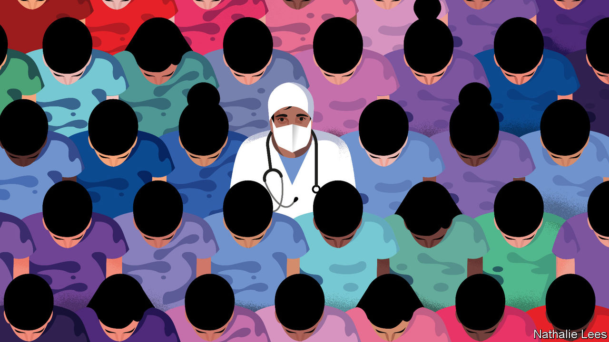

Coronavirus disease (COVID-19) is an infectious disease caused by a newly discovered coronavirus. Most people who fall sick with COVID-19 will experience mild to moderate symptoms and recover without special treatment.
The virus that causes COVID-19 is mainly transmitted through droplets generated when an infected person coughs, sneezes, or exhales. These droplets are too heavy to hang in the air, and quickly fall on floors or surfaces.
You can be infected by breathing in the virus if you are within close proximity of someone who has COVID-19, or by touching a contaminated surface and then your eyes, nose or mouth.

COVID-19 affects different people in different ways. Most infected people will develop mild to moderate illness and recover without hospitalization.


Seek immediate medical attention if you have serious symptoms. Always call before visiting your doctor or health facility.
People with mild symptoms who are otherwise healthy should manage their symptoms at home. On average it takes 5–6 days from when someone is infected with the virus for symptoms to show, however it can take up to 14 days.
Protect yourself and others around you by knowing the facts and taking appropriate precautions. Follow advice provided by your local public health agency.


To date, there are no specific vaccines or medicines for COVID-19. Treatments are under investigation, and will be tested through clinical trials. World Health Organization
If you feel sick you should rest, drink plenty of fluid, and eat nutritious food. Stay in a separate room from other family members, and use a dedicated bathroom if possible. Clean and disinfect frequently touched surfaces.
Everyone should keep a healthy lifestyle at home. Maintain a healthy diet, sleep, stay active, and make social contact with loved ones through the phone or internet. Children need extra love and attention from adults during difficult times. Keep to regular routines and schedules as much as possible.
It is normal to feel sad, stressed, or confused during a crisis. Talking to people you trust, such as friends and family, can help. If you feel overwhelmed, talk to a health worker or counsellor.

If you have mild symptoms and are otherwise healthy, self-isolate and contact your medical provider or a COVID-19 information line for advice.
Seek medical care if you have a fever, a cough, and difficulty breathing. Call in advance.